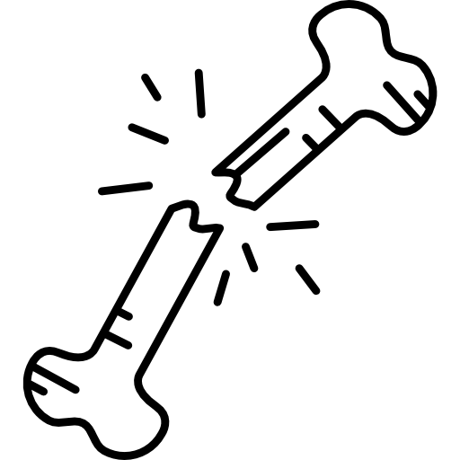

Missões
No Skate 3 as missões são essenciais para a progressão do jogador, permitindo evoluir habilidades e desbloquear novos desafios. Existem diferentes tipos, como as de pontuação, que exigem combos e manobras, as de corrida, focadas em velocidade, e as de trick list, que pedem movimentos específicos. Cada missão incentiva criatividade, controle e estilo próprio dentro do jogo.

Visão
No modo quebra-ossos de Skate 3, o objetivo é causar o maior dano possível ao personagem através de quedas e impactos. O jogador precisa escolher bem o local e o momento para se lançar, usando velocidade e obstáculos ao redor. Esse modo exige estratégia e criatividade, já que quanto mais destrutiva for a queda, maior será a pontuação alcançada.

Valores
No Skate 3, as conquistas funcionam como objetivos extras que incentivam o jogador a explorar diferentes aspectos do jogo. Elas podem envolver completar desafios específicos, realizar manobras difíceis ou progredir na carreira. Cada conquista exige dedicação e habilidade, recompensando o jogador com reconhecimento pelo seu desempenho e evolução dentro do jogo.